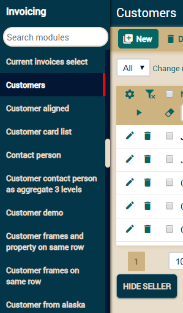
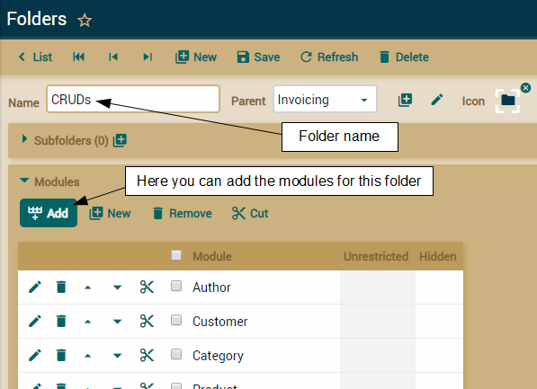
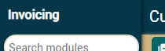

Module navigation
Menus
On left side you have a list with all your modules, click (or tap) one to
open it:

Folders
XavaPro
adds the module Folders to your application, in the
Admin
folder. This module allows you to organize the modules in the menu in a
hierarchical way.

It's just to create a new folder and assigning some modules to it. If you
want to translate the folder name, use it as key in the i18n labels files.
The hierarchical menu is only available in
XavaPro. Plain OpenXava uses a list of modules with a
search box.
Titles
and descriptions for modules and the application
Titles and descriptions are obtained from the i18n files of your
application.
# MyApplication-labels_en.properties
# Application title and description
Invoicing=Invoicing
Invoicing[description]=Manage invoices and orders
# Modules titles and descriptions
Invoice.module=Invoices
Invoice.module[description]=Create and manage invoices
Order.module=Orders
Order.module[description]=Create and manage orders, also generate invoices from orders
With the above entries OpenXava knows how to display the name and
description of
Invoice and
Order module in English.

Since v6.0 the description of the
modules is no longer used, so in the menu only the module name is used, as
you can see in the above first screenshot.
The application name is shown in
the top left corner of the page:

If you do not want to show the application name add the
showApplicationName
(new in v5.5) entry to your
naviox.properties (placed
in
properties folder):
showApplicationName=false
Behavior
customization
By default when the user sign in he starts working in the last module he
was working on. To change this behavior and to start always in
First
steps page add the next entry to
naviox.properties
(placed in
properties folder):
startInLastVisitedModule=false
If you want that the first page on entering will not be
First steps
but your own module add
initialModule property
(new in v6.3.2)
to
naviox.properties:
initialModule=MyInitialModule
If you use a version previous to 6.3.2 edit
firstSteps.jsp,
located in
web/naviox, remove all the content and place a
redirection on it, thus:
<script>window.location="MyInitialModule"</script>
Even if you use 6.3.2 or better you can edit
firstSteps.jsp
instead of using
initialModule in
naviox.properties, if
you want to add some logic to select the initial module, in this way:
In order that the top list of
recently visited modules will be clear after sign in, add the next entry
to
naviox.properties:
# Until v5.9.1
rememberVisitedModules=false
The
rememberVisitedModules is not available since v6.0.
If you want not to show the list of modules when the user is not logged,
add the next entry to
naviox.properties:
showModulesMenuWhenNotLogged=false
The modules menu will not be shown even if there are modules available for
not logged users.
To have certain modules always
present on top menu use
fixModulesOnTopMenu (new in v5.9)
in
naviox.properties:
fixModulesOnTopMenu=Invoice, Order
Just the list of modules separated by commas. The modules will be always
on the top bar, unless the user has no rights to access them.